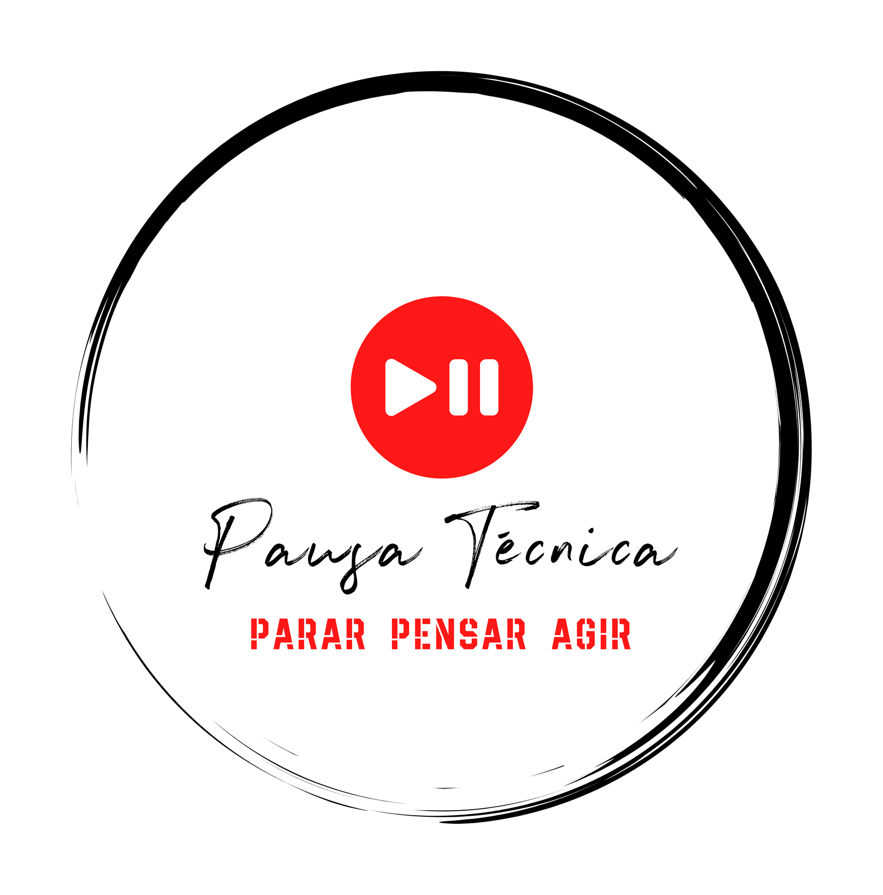

Lançamento
Parei, pensei e agi, desafio-te a fazer o mesmo
Lançamento
Este não será certamente o artigo mais interessante do blog, mas é sem dúvida dos mais importantes. É o momento em que finalmente decidi agir.

Como surgiu esta ideia?
Como qualquer profissional, ao longo dos anos fui recolhendo episódios, histórias (algumas caricatas), situações boas outras nem tanto mas sobretudo fui aprendendo. A esta bagagem normalmente chamamos Experiência.
Ao longo da minha carreira, tive a oportunidade de me cruzar com pessoas fantásticas de diferentes áreas, diferentes perfis e até nacionalidades. Esta exposição a situações complexas moldou-me e obrigou-me a desenvolver mecanismos para sistematizar informação, nesse processo de sistematização fui encontrando padrões, dogmas, mitos e tabus que resultaram em muitas reflexões e um mapa de conceitos cada vez mais complexo.
Colecionei um conjunto de notas soltas e apontamentos que são conhecimento puro mas inuteis por estarem perdidos em gavetas seja em forma de blocos de notas poeirentos ou pen drives. Nem para mim são utéis.
Em conversas técnicas com colegas, não raras vezes me ocorre que tenho notas sobre a questão, mesmo quando as encontro (e nem sempre é fácil), não estão em formato partilhável e de fácil consumo sem o devido enquadramento. Eram notas para mim…
Muitas dessas notas e reflexões foram fonte de inspiração para criar conteúdo explicativo de conceitos complexos que partilhei com colegas e que lhes foi útil.
Sugeriram-me escrever um livro com esses conteúdos, mas entrar de cabeça num projeto dessa envergadura pareceu-me demasiado arriscado. No entanto não pude ignorar e assim surgiu a ideia de criar um blog e passar a fazer o registo das minhas notas e reflexões online.
Ao contrário de um livro, um blog não precisa ter todo o seu conteúdo criado antes de ver a luz do dia e pode começar ser útil desde o primeiro post.
O meu blog, as minhas regras
Não sei qual será a recetividade que o blog terá. Parto nesta aventura sem expetativas, o meu objetivo é a viagem.
Na pior das hipóteses, terei os meus apontamentos organizados e à distância de um clique.
Tecnologia e transparência
A tecnologia permite-nos ser mais eficientes e alcançar coisas incríveis. Em particular, há ferramentas de código aberto disponiveis que rivalizam com as melhores ferramentas comerciais e que permitem tornar acessiveis “super poderes” ao comum dos mortais.
No desenvolvimento deste blog, tiro partido deste tipo de ferramentas e partilho com total transparência como o fiz e o que fui aprendendo, faço-o para que outros também o possam fazer.
É um site em código aberto, totalmente acessível em Github
Pausa Técnica